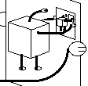

| The Paradox of Self-Replicating Machines Can a machine make a copy of itself? Before the mechanism for the replication of DNA was discovered, some thought self-reproduction could not be explained mechanically. Von Neumann's resolution of this problem led to the field of Artificial Life. |  |
| Cellular Automata Basics What are CA? How do they work? How do we build a simple universe in a computer? | |
| Here we study some examples of cellular automata patterns. |  |